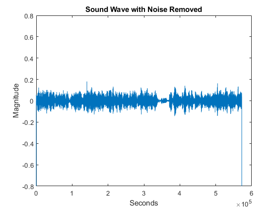

Contents
clear all
clc
clf
3.1
[y, Fs] = audioread("Sound_Files_human_voice.wav");
t = linspace(0 , length(y)/Fs, length(y));
t = t';
figure(1)
plot(t,y);
title('Human Voice Wave')
xlabel('Seconds')
ylabel('Magnitude')
Fs2 = 8000;
y2 = zeros(length(y)/6,1);
t2 = linspace(0 , length(y2)/Fs2, length(y2));
t2 =t2';
for i = 1:length(y)/6
y2(i) = y(i*6);
end
figure(2)
plot(t2,y2)
title('Downsampled Human Voice Wave')
xlabel('Seconds')
ylabel('Magnitude')
3.2
[y1, Fs1] = audioread("Sound_Files_M1.wav");
[y2, Fs2] = audioread("Sound_Files_M2.wav");
[y3, Fs3] = audioread("Sound_Files_M3.wav");
rms1 = sqrt(mean(y1.^2));
rms2 = sqrt(mean(y2.^2));
rms3 = sqrt(mean(y3.^2));
fprintf('The RMS value for M1 is %.2f\n', rms1);
fprintf('The RMS value for M2 is %.2f\n', rms2);
fprintf('The RMS value for M3 is %.2f\n', rms3);
size = 24000;
d = linspace(-24000, 24000, 48001);
corrspace = zeros(2*size+1,1);
for j = -1*size:size
delay = j;
corr = 0;
if (delay>=0)
for i = 1+delay:length(y1)-delay
corr = corr + y1(i)*y2(i-delay);
end
corrspace(j+size+1) = corr;
end
if (delay<0)
for i = 1:length(y1)+delay
corr = corr + y1(i)*y2(i-delay);
end
corrspace(j+size+1) = corr;
end
end
figure(3)
plot(d, corrspace);
title('Cross Correlation for M1 and M2')
xlabel('Sample Delay')
ylabel('Cross Correlation')
d1 = 4;
d2 = 2;
r = 1.5;
theta = 90 - acosd((d1^2+d2^2-4*r^2)/(2*d1*d2))/2 - acosd((4*r^2+d1^2-d2^2)/(4*r*d1));
fprintf('The angle θ the robot must turn is %.2f degrees.\n', theta);
The RMS value for M1 is 0.23
The RMS value for M2 is 0.18
The RMS value for M3 is 0.23
The angle θ the robot must turn is 37.76 degrees.
3.3
[y, Fs] = audioread("Sound_Files_Cafe_with_noise.wav");
figure(4)
plot(y);
title('Cafe With Noise Sound Wave')
xlabel('Seconds')
ylabel('Magnitude')
win = hann(100, 'periodic');
[S, F, T] = stft(y, Fs, "Window", win);
figure(5)
smag = mag2db(abs(S));
pcolor(seconds(T), F, smag);
shading flat
colorbar
clim(max(smag(:)+[-60 0]));
title('Cafe With Noise Sound Wave Spectrogram')
xlabel('Seconds')
ylabel('Frequency')
player = audioplayer(y, Fs);
play(player);
pause(1)
for i = 1:100
if (abs(F(i))>900)
S(i,:)=0;
end
end
figure(6)
smag = mag2db(abs(S));
pcolor(seconds(T), F, smag);
shading flat
colorbar
clim(max(smag(:)+[-60 0]));
y = istft(S, Fs, "Window", win);
title('Spectrogram with Noise Removed')
xlabel('Seconds')
ylabel('Frequency')
figure(7)
plot(y);
ylim([-0.8 0.8])
title('Sound Wave with Noise Removed')
xlabel('Seconds')
ylabel('Magnitude')
player = audioplayer(y, Fs);
play(player);
